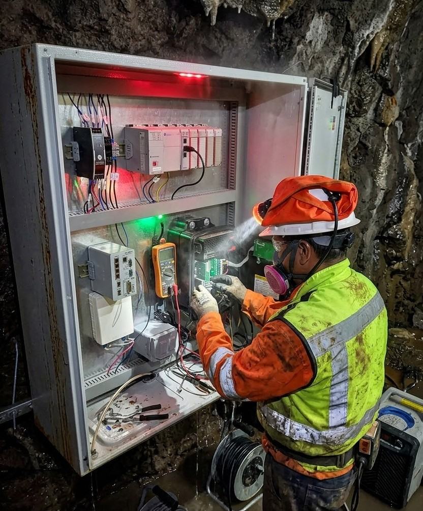
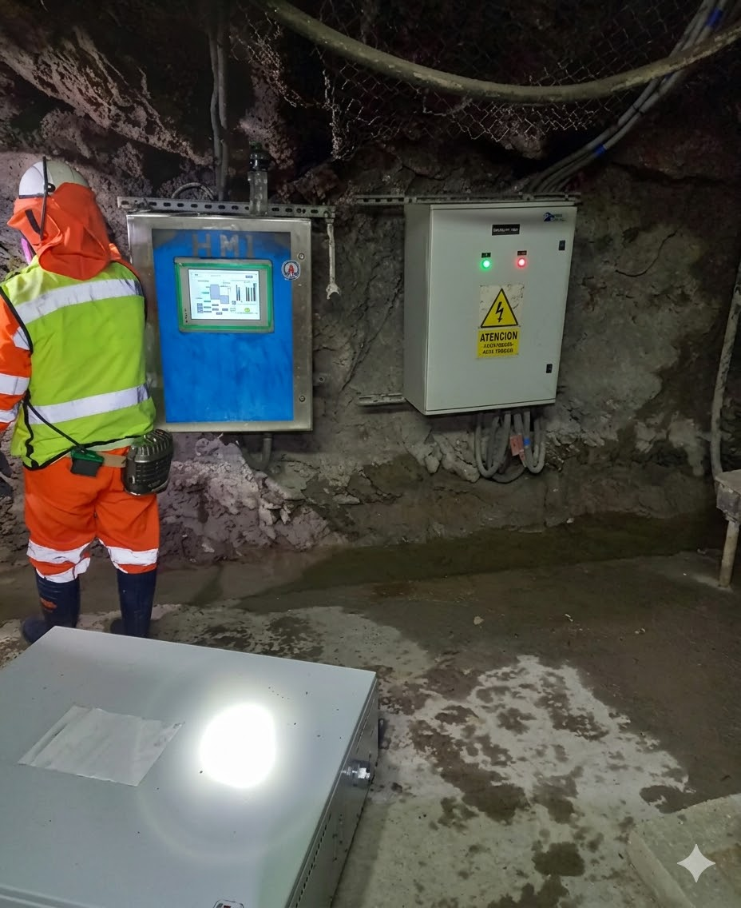
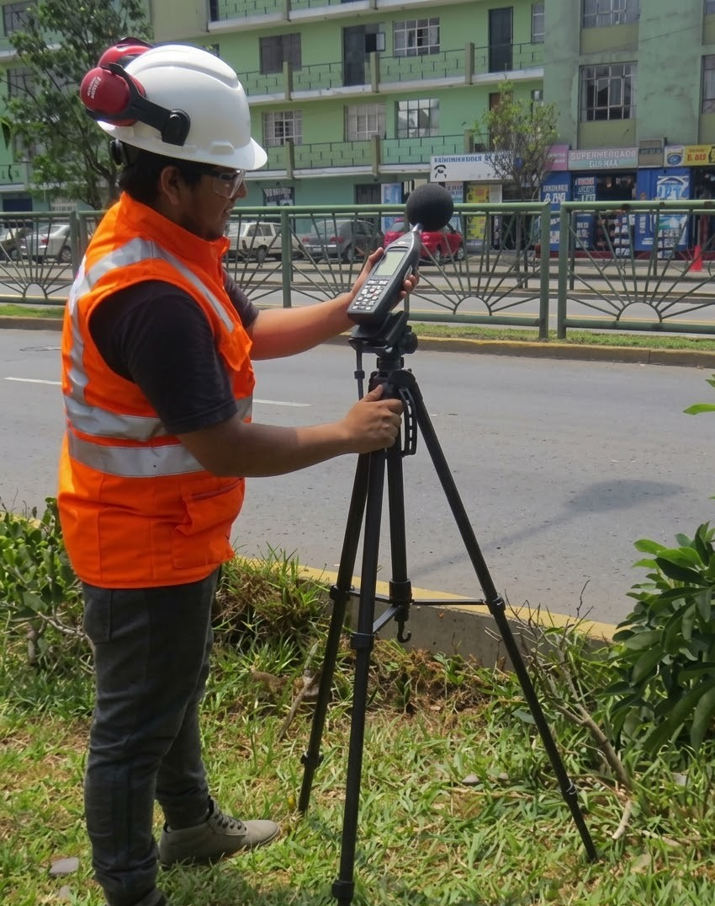
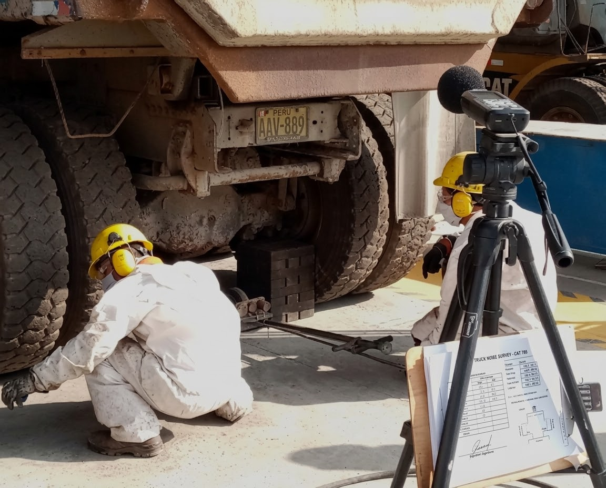

Huella técnica en las operaciones más complejas de la región.
Implementación de estaciones hidrométricas para el control remoto de calidad y flujo de agua. Un desafío de ingeniería a 4,000 m.s.n.m.
Como parte del uso eficiente del agua, la unidad minera implementó medidas críticas como la recirculación en procesos y la detección de fugas. Sin embargo, se requería optimizar el control mediante estaciones hidrométricas en puntos de captación autorizados.
El objetivo: Diagnóstico total y reporte en tiempo real a las autoridades gubernamentales para garantizar la preservación del recurso hídrico.

Nuestros ingenieros implementan dispositivos de monitoreo y tableros de control eléctrico bajo condiciones extremas.

Visualización de datos SCADA y control remoto activo 24/7.
Instrumentación de estación hidrométrica en tubería de 18” para monitoreo continuo. Uso de sonda multiparamétrica Aquatroll 600 (pH, turbidez, TSS, T°) y FloPro CXI para flujo, conectados vía protocolo MODBUS.
Almacenamiento de data histórica y observación en tiempo real simultánea. Mejora drástica en los estándares de monitoreo frente a las autoridades y control total de la gestión hídrica.
Sistemas autónomos para el monitoreo acústico continuo. Reduzca costos logísticos y obtenga datos precisos en tiempo real sin desplazamientos innecesarios.
Envío de datos vía WIFI o telefonía móvil con reportes gráficos automáticos.
Energía independiente para operar 24/7 en ubicaciones aisladas.
Elimina gastos operativos de transporte a puntos de monitoreo.

Mapeo acústico y sondeos de ruido en ciudades.

Fiscalización y control en campamentos mineros.